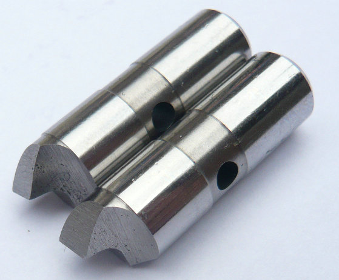
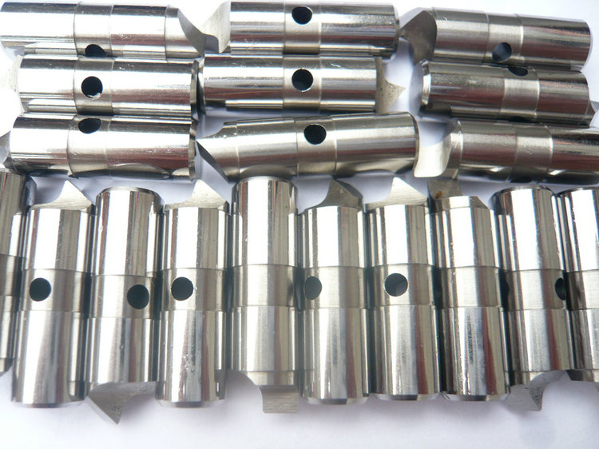
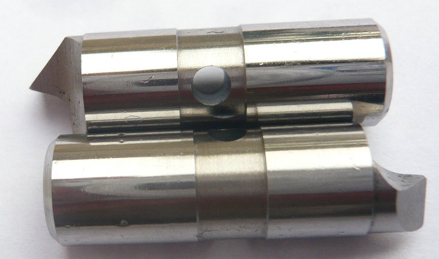

YDTech® OEM changeable S7 driver pins,workholding S7 accessories for Lathe driving system! supplier of S7 wear clamping parts, chuck blade pins for turning or grinding.


We produce any quantity – from a prototype set of three pins to batch orders of thousands. Every shipment includes a material certificate and dimensional report. No minimum order is too small, and no driver model is too obscure.
Stop overpaying for OEM pins or living with worn‑out grips. Choose changeable drive pins – custom‑made from S7 tool steel for your face driver, your workpieces, and your bottom line.


Every face driver – relies on a small but critical component to transmit torque: the drive pin. These pins bite into the workpiece end face, converting spindle power into rotation. But drive pins wear. They chip, crack, or simply lose their sharp edge after hundreds of hours of hard cutting. When that happens, you do not need to scrap the entire face driver. You only need changeable drive pins – and that is exactly what we manufacture.
FDP-5 standard of drive pins,face drivers, lathe face driver driving pins,sizes of drive pins, changeable driving pins, drive teeth pins
| face drive pins (diameter) | CNC driving pins (length) | lathe drive teeth pins (depth) | driver pin teeths (width) | drive pins technologies | |||||||
|---|---|---|---|---|---|---|---|---|---|---|---|
| 0.800 | 3.622 | 1.732 | 0.183 | FDPT 2023DD | |||||||
| 0.800 | 3.622 | 1.722 | 0.214 | FDPT 2023DD | |||||||
| 0.800 | 3.622 | 1.813 | 0.228 | FDPT 2023G | |||||||
| 0.800 | 3.622 | 1.823 | 0.258 | FDPT 2023VVD | |||||||
| 0.800 | 3.622 | 1.865 | 0.288 | FDPT 2023G | |||||||
| 0.800 | 3.622 | 1.965 | 0.265 | FDPT 2023G | |||||||
| 0.800 | 3.622 | 1.988 | 0.248 | FDPT 2023V | |||||||
| 0.800 | 3.622 | 2.008 | 0.358 | FDPT 2023HU | |||||||
| 0.800 | 3.622 | 2.156 | 0.368 | FDPT 2023YH | |||||||
| 0.800 | 3.622 | 2.168 | 0.387 | FDPT 2023JJ | |||||||
| 0.800 | 3.622 | 2.225 | .281 | FDPT 2023T | |||||||
| 0.800 | 3.622 | 2.254 | 0.402 | FDPT 2023H | |||||||
| 0.800 | 3.622 | 2.287 | 0.442 | FDPT 2023HH | |||||||
| 0.800 | 3.622 | 2.345 | 0.462 | FDPT 2023TG | |||||||
| 0.800 | 3.622 | 2.369 | 0.482 | FDPT 2023G | |||||||
| 0.800 | 3.622 | 2.465 | 0.520 | FDPT 2023T | |||||||
| 0.800 | 3.622 | 2.485 | 0.542 | FDPT 2023GT | |||||||
| 0.800 | 3.622 | 2.546 | 0.562 | FDPT 2023T | |||||||
| 0.800 | 3.622 | 2.548 | 0.586 | FDPT 2023GT | |||||||
| 0.800 | 3.622 | 2.559 | 0.602 | FDPT 2023G | |||||||
A quality face driver is a precision instrument with a long service life. Its core parts – the center point, bearings, seals, and floating mechanisms – can last for years. The drive pins, however, are the consumable interface. They take the direct impact of interrupted cuts, high feed rates, and abrasive materials. By simply replacing the pins, you restore full gripping force and machining accuracy at a fraction of the cost of a new driver.
That is why leading brands design their drivers with replaceable pin systems. And that is why we exist: to supply changeable drive pins that fit perfectly, perform reliably, and keep your production running.
- home
- products
- contact
- equipments
- face driver pins
- offset driving parts
- half offset drive pins
- central driver parts
- standard/ Fixed driving pins
- Lowered drive parts
- clockwise driver pins
- counterclockwise driving parts
- full width drive pins
- life driver parts
- chisel-edged driving pins
- floating drive parts
- power-operated driver pins
- hydraulic driving parts
- mechanical drive pins
- SB driver parts
- FFB driving pins
- carbide driver pins
- tool steel S7 driving parts
- changeable pins